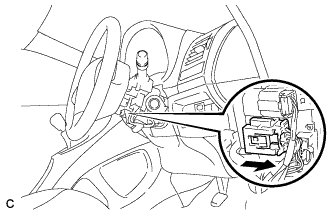
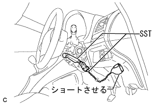
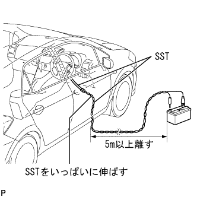
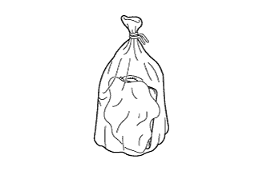
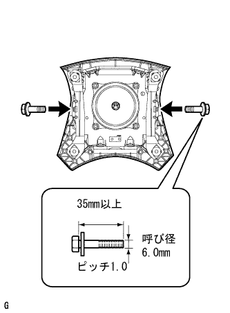
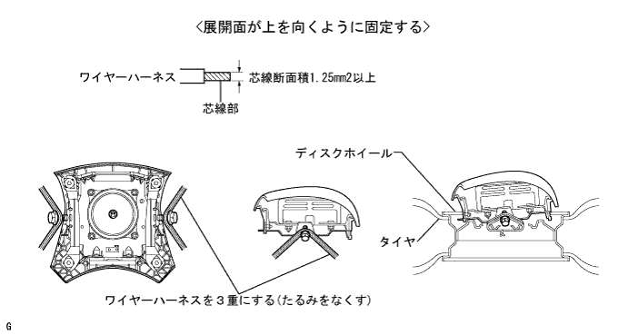
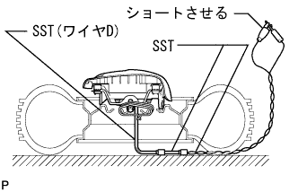
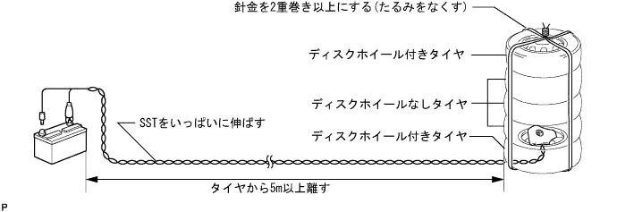

Horn Button Assembly Disposal |
| 1. Dispose of Horn Button Assembly (When Scrapping Vehicle) |
Remove Steering Column Lower Cover
Remove Horn Button Assembly (see)
Remove Steering Wheel Assembly (see)
Release the tilt lever, disengage the 7 claws and remove the steering column cover (lower side). (For the procedure,)
Install Steering Wheel Assembly (see)
Install Horn Button Assembly (see)
 |
Disconnect the airbag connector from the spiral cable.
 |
Airbag (Horn Button Assembly) Deployment
Connect the following 2 SSTs together.
Short the alligator clip and terminal of the SST.
Connect the SST to the airbag connector of the spiral cable and lock it securely.
 |
Extend the SST fully from the vehicle and place the battery at least 5m away from the vehicle.
After confirming safety inside the cabin and in the surrounding area, connect the alligator clip of the SST to the negative terminal of the battery.
Connect the SST terminal to the battery positive and deploy the airbag (horn button assembly).
 |
Airbag (Horn Button Assembly) Disposal Procedure
Place the deployed airbag (horn button assembly) in a strong, transparent plastic bag, seal it and dispose of it.
| 2. Dispose of Horn Button Assembly (When Disposing of Part Alone) |
Fix Horn Button Assembly
 |
Fully tighten by hand 2 bolts with plate washers in the 2 installation holes of the horn button assembly.
Connect the following 3 SSTs together.
Connect the SST to the airbag (horn button assembly) and lock it securely.
After passing the SST through the disc wheel, use wire harnesses (core wire cross-sectional area 1.25mm2or more) to fix the horn button assembly to the disc wheel.

 |
Airbag (Horn Button Assembly) Deployment
Pull out the SST from the underside of the disc wheel.
Short the alligator clip and terminal of the SST.
As shown in the illustration, stack 3 or more tires on the disc wheel to which the horn button assembly is fixed, and place a tire with a disc wheel on top.
Using wire with a diameter of 1.8mm or more (general-purpose ordinary steel wire: equivalent to JIS SWM-B), wrap the tires together 2 or more times and tie them securely without slack.
Extend the SST fully from the airbag (horn button assembly) and place the battery 5m or more away from the tires.

 |
Surround the area within a radius of 5m from the outside of the tires with pylons and rope, etc. so that no one can enter.
After confirming safety in the surrounding area, connect the alligator clip of the SST to the negative terminal of the battery.
Connect the SST terminal to the battery positive and deploy the airbag (horn button assembly).
Airbag (Horn Button Assembly) Disposal Procedure
Place the deployed airbag (horn button assembly) in a strong, transparent plastic bag, seal it and dispose of it.